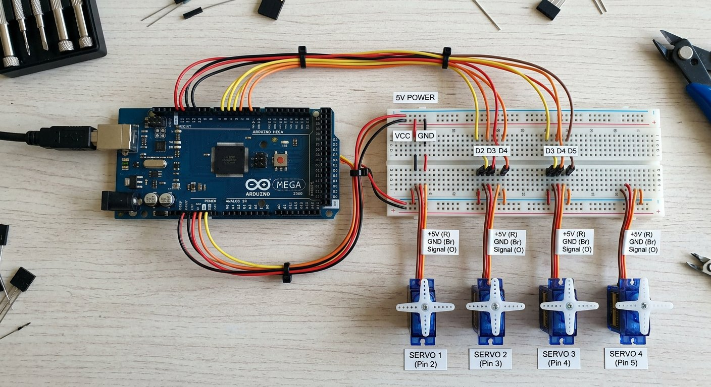

Qué cubre esta guía
Por qué el Arduino Mega
Un brazo robótico con seis servos, encoders, sensores y comunicación consume pines y memoria rápidamente. El Arduino Mega resuelve ese cuello de botella de raíz:
| Recurso | Uno | Mega |
|---|---|---|
| Pines digitales | 14 | 54 |
| Pines PWM | 6 | 15 |
| Memoria de programa | 32 KB | 256 KB |
| Puertos seriales hardware | 1 | 4 |
| Servos manejables (Servo lib) | ~12 (con limitaciones) | ~12 sin tantas limitaciones |
Con el Mega puedes conectar los seis servos, dos o tres encoders, un sensor de fuerza, un módulo Bluetooth y una pantalla, y todavía te sobran pines y memoria. Es la placa que no te deja corto cuando el brazo crece.
Asignación de pines PWM para servos
Los servos necesitan pines con PWM por hardware. En el Mega, los pines PWM son el 2 al 13 y el 44 al 46. Una asignación ordenada para seis servos es:
Articulacion Pin Mega
----------- --------
Base (J1) 2
Hombro (J2) 3
Codo (J3) 4
Muneca giro (J4) 5
Muneca inc (J5) 6
Muneca rot (J6) 7Shields de servos y regletas de alimentación
Un shield de servos (como los basados en PCA9685) resuelve dos problemas a la vez: genera las señales PWM de 16 canales por I2C sin consumir temporizadores del Arduino, y ofrece regletas para distribuir la alimentación a todos los servos de forma limpia.
- Sin shield: cada servo se conecta a un pin PWM del Mega y al riel de alimentación, lo que multiplica los cables.
- Con shield PCA9685: dos pines I2C (SDA/SCL) controlan hasta 16 servos, y el shield reparte la potencia. Es la opción recomendada para brazos con muchos servos.
La tierra común: la regla de oro
Cuando los servos se alimentan de una fuente externa separada del Arduino, ambas partes deben compartir la misma referencia de tierra. La señal PWM que sale del Arduino necesita una referencia común con la fuente de los servos; sin ella, el servo no interpreta bien la señal y se comporta de forma errática.
Calibre y longitud de cables
| Conexión | Calibre (AWG) | Motivo |
|---|---|---|
| Fuente → regleta | 18 – 20 | Soporta la corriente total del riel |
| Regleta → cada servo | 22 | Corriente de un solo servo |
| Señal PWM | 24 – 26 | Corriente mínima, flexibilidad |
Los cables de potencia finos provocan caídas de voltaje y calentamiento bajo carga. Mantén los cables de potencia cortos y gruesos, y reserva los finos y flexibles para las señales, que es donde la flexibilidad importa en las articulaciones.
Esquema de conexión completo
Fuente 5-6V (3-6 A)
+ ----> regleta (+) ----> VCC de cada servo (cable rojo)
- ----> regleta (-) ----> GND de cada servo (cable marron)
|
+----> GND del Arduino Mega (tierra comun)
Arduino Mega
Pin 2..7 ----> senal de cada servo (cable naranja/amarillo)
(o) I2C SDA/SCL ----> shield PCA9685 ----> 16 canales PWM a los servos
Nota: la senal de control va del Arduino al servo;
la potencia va de la fuente al servo, NUNCA a traves de la placa.Este esquema separa claramente la lógica (señales) de la potencia (corriente), que es el principio fundamental de todo cableado robótico confiable.
Gestión de cables en las articulaciones
- Agrupa por segmento: usa manguera espiral o trenzado para agrupar los cables de cada tramo del brazo.
- Deja holgura: cada articulación necesita cable extra para su recorrido completo sin tensar.
- Fija con bridas: ancla los cables en puntos que no limiten el movimiento, lejos del eje de giro donde se retuercen.
- Etiqueta: marca cada conector para identificar servos y señales sin rastrear cables.
Un cable tensado en una articulación es una de las causas más frecuentes de fallas intermitentes en brazos caseros: el robot funciona en unas posiciones y falla en otras, según cómo se estire el cable.
Problemas comunes y soluciones
| Síntoma | Causa probable | Solución |
|---|---|---|
| Los servos no se mueven | Falta la tierra común | Conectar GND de la fuente al GND del Arduino |
| Servos erráticos o temblorosos | Señal sin referencia o fuente ruidosa | Verificar tierra común y fuente estable |
| Reinicio al exigir torque | Cables de potencia finos | Subir a 18-20 AWG en el riel principal |
| Falla solo en ciertas posiciones | Cable tensado en articulación | Reordenar con más holgura y bridas |
| Un canal PWM no funciona | Conflicto de temporizador | Reasignar a pines 2-13 del Mega |
Conclusión
El cableado es la mitad invisible de un brazo robótico: una placa con pines de sobra, una fuente bien dimensionada, la tierra común y una gestión de cables cuidadosa convierten un prototipo errático en un sistema confiable. Con el Mega bien cableado, el siguiente paso es llevarlo a control inalámbrico con el ESP32 o mejorar la precisión con encoders de articulación.
Preguntas frecuentes
¿Por qué usar un Arduino Mega en lugar de un Uno para un brazo robótico?
El Arduino Mega ofrece más pines digitales (54 frente a 14), más pines PWM, más memoria de programa (256 KB frente a 32 KB) y cuatro puertos seriales por hardware. En un brazo robótico esto se traduce en poder conectar los seis servos, varios encoders, sensores de fuerza, un módulo Bluetooth y una pantalla sin quedarse sin pines ni memoria, y sin los conflictos de temporizadores que limitan la librería Servo en el Uno. Cuando el proyecto crece más allá de "mover seis servos", el Mega es la placa que no te deja corto.
¿Qué pines debo usar para los servos y por qué?
Para servos, usa pines que soporten PWM por hardware. En el Mega, los pines 2 a 13 y 44 a 46 son PWM; la librería Servo puede manejar hasta 12 servos en el Mega sin desactivar tanto PWM como en el Uno. Conviene reservar los pines PWM para los servos y dejar los pines analógicos y los seriales para sensores y comunicación. También es importante saber que la librería Servo usa temporizadores: en el Mega usa el temporizador 5, lo que puede desactivar el PWM de los pines 44, 45 y 46; por eso se documenta siempre qué pines se ven afectados.
¿Qué es la tierra común y por qué es obligatoria?
Cuando alimentas los servos con una fuente externa separada del Arduino, las dos partes deben compartir una referencia de voltaje común: esa referencia es la tierra (GND). Sin la tierra común, la señal de control (PWM) que sale del Arduino no tiene una referencia clara respecto a la fuente de los servos, y estos se comportan de forma errática o no se mueven. La regla de oro es conectar siempre el GND de la fuente de los servos al GND del Arduino, manteniendo el positivo (5V/6V) separado.
¿Qué calibre de cable debo usar para alimentar los servos?
Los cables de potencia de los servos deben ser capaces de soportar la corriente total del riel. Para un riel que alimenta varios servos (varios amperios), conviene cable de calibre 18 o 20 AWG desde la fuente hasta la regleta de distribución, y cable de 22 AWG para cada servo individual. Los cables de señal (PWM) pueden ser más finos, de 24 a 26 AWG, porque llevan muy poca corriente. Usar cables demasiado finos para la potencia provoca caídas de voltaje, calentamiento y el clásico reinicio al exigir torque.
¿Cómo evito que los cables se enreden en las articulaciones?
La gestión de cables es crítica en un brazo móvil. Usa manguera espiral o trenzado (spiral wrap) para agrupar los cables de cada segmento, deja holgura suficiente en cada articulación para el recorrido completo sin tensar, fija los cables con bridas o clips en puntos de anclaje que no limiten el movimiento, y evita que pasen por el eje de giro donde se retuercen. Un cable mal sujeto que se tensa en una articulación es una de las causas más comunes de fallas intermitentes en brazos caseros.
Este artículo es contenido editorial independiente: no contiene ubicaciones patrocinadas ni enlaces de afiliado. Si en futuras actualizaciones se agregan enlaces a proveedores de componentes, serán identificados explícitamente. El código y las conexiones son referenciales y deben adaptarse y probarse con tu propio hardware. Si detectas un error en esta guía, por favor avísanos.
Sigue aprendiendo
Con el cableado resuelto, lleva el control a la nube con el ESP32 como Controlador de Brazo Robótico, o mejora la precisión con los Encoders de Articulación.
Fuentes primarias y lecturas recomendadas
Referencias que sustentan los conceptos generales de la guía. Los pines exactos pueden variar según la placa y la versión de la librería.
- Arduino — Documentación oficial del Arduino Mega 2560
- Arduino Reference — Librería Servo
- Adafruit — Driver PWM PCA9685 de 16 canales
Enlaces revisados: 13 de agosto de 2026.